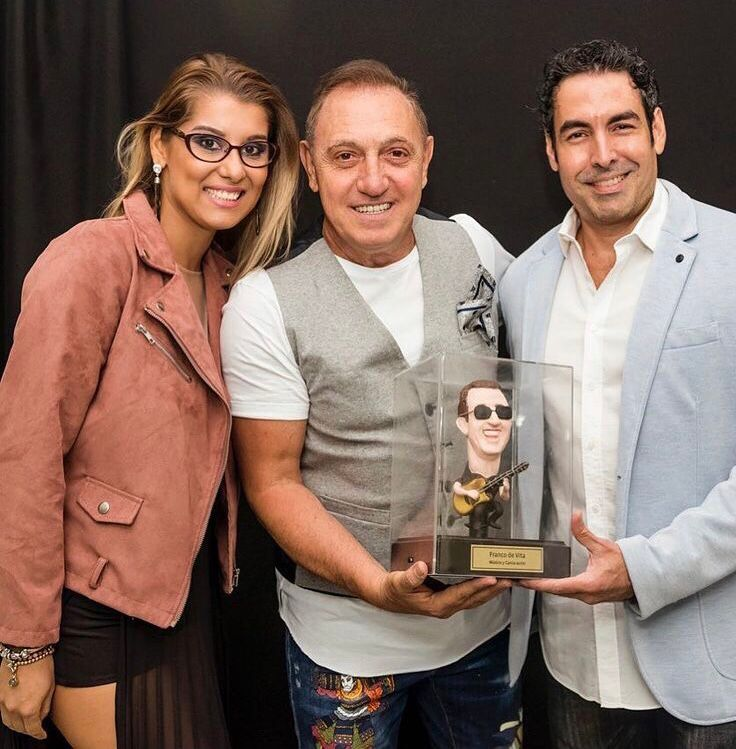

Única en el mundo
Sin moldes ni segundas copias. La pieza que recibes es la única que existirá jamás.
Con una estatuilla personalizada, Joaquín inmortaliza a la persona que importa en una sola pieza imposible de repetir. El mismo artista que ha retratado a presidentes y leyendas de la región.
Aplicar para una estatuilla



Reconocido por los medios en Panamá y Latinoamérica:
Sin moldes ni segundas copias. La pieza que recibes es la única que existirá jamás.
Joaquín modela cada pieza personalmente en Panamá. Nada se delega, nada se apura.
El estudio acepta apenas un puñado de encargos por temporada. Tener una es pertenecer a un grupo muy reducido.
El regalo que no se compra: se esculpe
Durante más de cuatro décadas, Joaquín Carrasquilla ha retratado a quienes mueven la región — presidentes, artistas, empresarios, figuras de la cultura de Panamá y Latinoamérica. La estatuilla es ese mismo oficio llevado al volumen: la caricatura convertida en escultura, con un parecido que se reconoce antes de leer el nombre.
No se regala un adorno. Se regala el gesto de haber visto a alguien de verdad — su carácter, su humor, lo que lo hace inconfundible— capturado para siempre.


Un grupo reducido. Nombres que no necesitan presentación.

Cada temporada se esculpen muy pocas. Si tienes en mente a alguien que lo merece, este es el momento de pedir la suya.
Aplicar para una estatuillaEl artista


Joaquín Carrasquilla es caricaturista, escultor, pintor y cineasta panameño. Durante décadas ha retratado a los personajes que definen la política, la cultura y los negocios de la región — de la caricatura editorial publicada en prensa a las esculturas que hoy descansan en los escritorios de quienes casi nada les falta.
Una estatuilla suya no sale de un catálogo. Es el resultado de una vida entera afinando una sola habilidad: capturar la esencia de una persona. Ahora, en tres dimensiones.
El estudio acepta pocos encargos por temporada. Cuéntanos quién es la persona; del resto nos encargamos nosotros.
Aplicar para una estatuilla